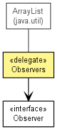

de.lmu.ifi.dbs.elki.utilities.designpattern
Class Observers<T>
java.lang.Object
 java.util.AbstractCollection<E>
java.util.AbstractList<E>
java.util.Vector<Observer<? super T>>
de.lmu.ifi.dbs.elki.utilities.designpattern.Observers<T>
java.util.AbstractCollection<E>
java.util.AbstractList<E>
java.util.Vector<Observer<? super T>>
de.lmu.ifi.dbs.elki.utilities.designpattern.Observers<T>
- All Implemented Interfaces:
- Serializable, Cloneable, Iterable<Observer<? super T>>, Collection<Observer<? super T>>, List<Observer<? super T>>, RandomAccess
public class Observers<T>
- extends Vector<Observer<? super T>>

Class to manage the observers of an instance.
Design note: to avoid reference cycles, this object does not keep track of its owner.
- See Also:
- Serialized Form
| Methods inherited from class java.util.Vector |
add, add, addAll, addAll, addElement, capacity, clear, clone, contains, containsAll, copyInto, elementAt, elements, ensureCapacity, equals, firstElement, get, hashCode, indexOf, indexOf, insertElementAt, isEmpty, lastElement, lastIndexOf, lastIndexOf, remove, remove, removeAll, removeAllElements, removeElement, removeElementAt, removeRange, retainAll, set, setElementAt, setSize, size, subList, toArray, toArray, toString, trimToSize |
serialVersionUID
private static final long serialVersionUID
- Serial version
- See Also:
- Constant Field Values
Observers
public Observers()
- Constructor.
addObserver
public void addObserver(Observer<? super T> o)
- Add an observer to the object.
- Parameters:
o - Observer to add
removeObserver
public void removeObserver(Observer<? super T> o)
- Remove an observer from the object.
- Parameters:
o - Observer to remove
notifyObservers
public void notifyObservers(T owner)
- Notify the observers of the changed object.
- Parameters:
owner - Owner of the Observers list - changed instance